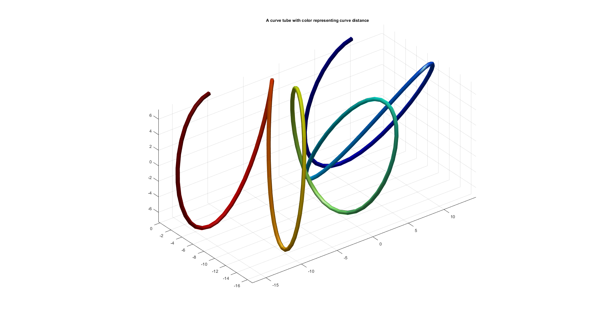
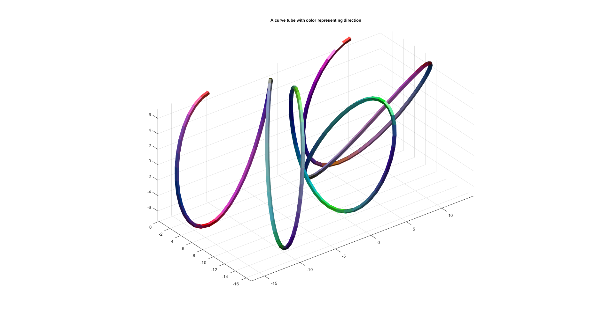

polyTube
Below is a basic demonstration of the features of the polyTube function.
Contents
clear; close all; clc; % PLOT SETTINGS fig_color='w'; fig_colordef='white'; markerSize=15; lineWidth=2; fontSize=10;
Creating example curve
ns=150; t=linspace(0,-pi,ns); r=10+7.*sin(8*t); [x,y] = pol2cart(t,r); z=7*cos(10.*t); V=[x(:) y(:) z(:)];
BUIDLING THE TUBE
optStruct.r=0.25;
optStruct.nr=5;
optStruct.patchType='tri';
[Fs,Vs,Cs,Cs_rgb,Cs_d]=polyTube(V,optStruct);
hf1=figuremax(fig_color,fig_colordef); hold on; title('A curve tube with color representing curve distance','fontSize',fontSize); hp=patch('Faces',Fs,'Vertices',Vs,'EdgeColor','none','FaceColor','flat','CData',Cs_d,'FaceAlpha',1); camlight headlight; lighting phong; drawnow; view(3); grid on; axis equal; axis tight; hf1=figuremax(fig_color,fig_colordef); hold on; title('A curve tube with color representing direction','fontSize',fontSize); hp=patch('Faces',Fs,'Vertices',Vs,'EdgeColor','none','FaceColor','flat','FaceVertexCData',Cs_rgb,'FaceAlpha',1); camlight headlight; lighting flat; %png export gave bug for HTML publishing while using phong lighting drawnow; view(3); grid on; axis equal; axis tight; 

GIBBON www.gibboncode.org
Kevin Mattheus Moerman, gibbon.toolbox@gmail.com